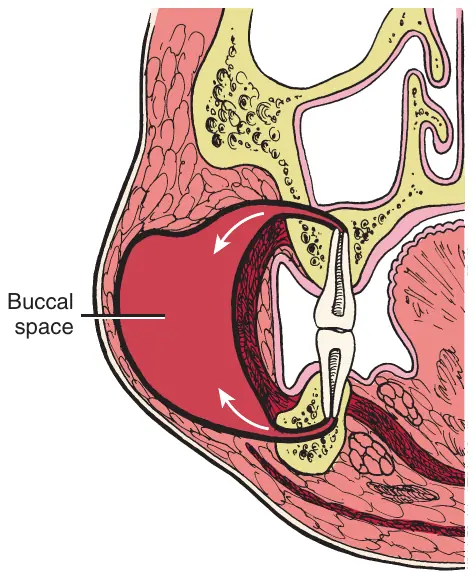
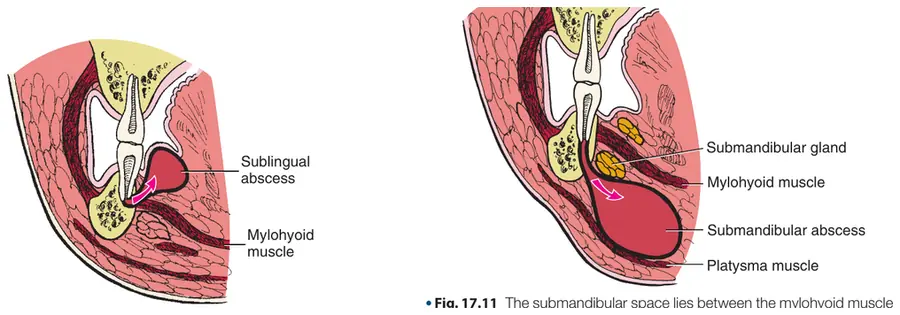

نسخه استخراجشده؛ ترجمه یا تأیید علمی انجام نشده است. وضعیت: captured
یک تعریف که همهچیز را روشن میکند: این فضاها «بالقوه»اند — یعنی تنها زمانی وجود دارند که باکتری یا مادهی دیگری به آنها هجوم آورده باشد. در حالت سلامت، اینها صرفاً لایههای بههمچسبیدهی فاشیا هستند.

لایههای فاشیای سرویکال سر و گردن، مرزهای عفونتهای فضاهای عمقی گردن را تعیین میکنند — و فاشیای سرویکال عمقی خود به لایههای سطحی، میانی و عمقی تقسیم میشود. لایهی عمقی خودش دو برگ دارد — آلار در جلو و پرهورتبرال در عقب — و «فضای خطر» همان فاصلهی میان این دو است.
و سه دلیل روشن وجود دارد که چرا این آناتومی برای تو حیاتی است:
یعنی آناتومی اینجا سه کار میکند: تشخیص، دسترسی ایمن، و پیشبینی مسیر.
نقشهی فضاهای فاشیال را میتوان در چند قاعدهی کاربردی خلاصه کرد:

دو فضای ثانویهی ماگزیلا: فضای کانین (اینفرااوربیتال) — بیشتر از ریشهی بلند کانین بالا و گاه پرمولر بالا، فضای اربیتال از سینوزیت ماگزیلاری و دندانهای بالا، که محتویاتش کرهی چشم، عضلات خارجچشمی و اعصاب مغزی دو، سه، چهار، پنج و شش است.
فضای اولیهی مندیبل: بادی مندیبل از دندانهای خلفی پایین، که محتویاتش عصب و شریان و ورید آلوئولار تحتانی است، و فضاهای مجاورش ماستیکاتور، سابلینگوال و سابمندیبولار.
و فضای ماستیکاتور — چهار زیرفضایی که تریسموس میسازند:
یک الگو را ببین: مولر سوم مندیبل، منشأ چند زیرفضای ماستیکاتور است. و همین توضیح میدهد چرا پریکورونیت مولر سوم میتواند به تریسموس شدید بینجامد.